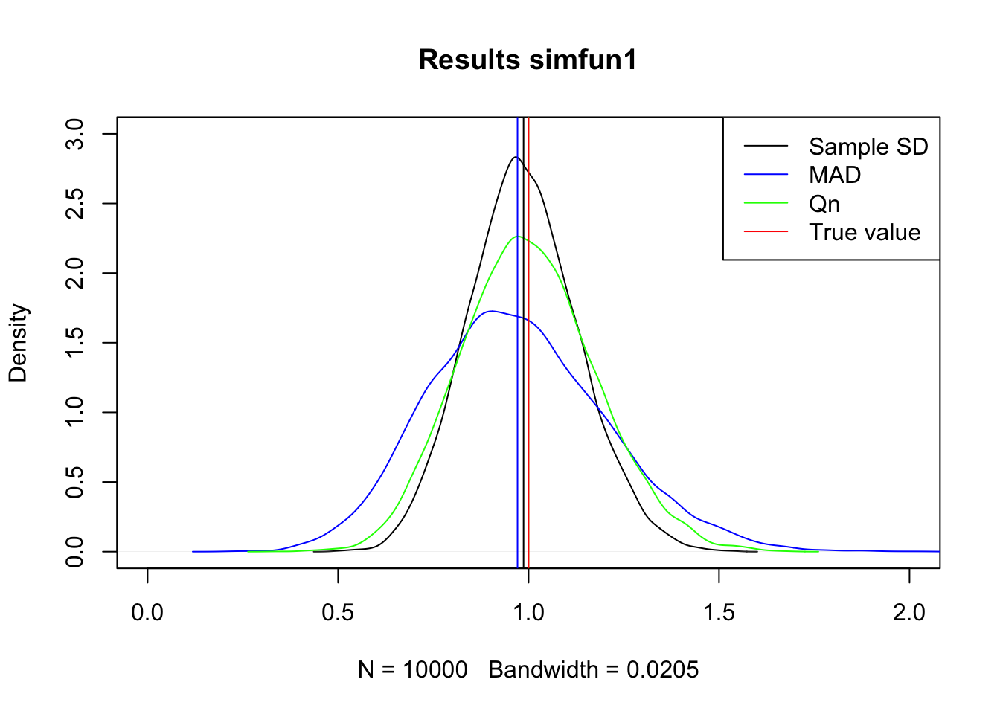
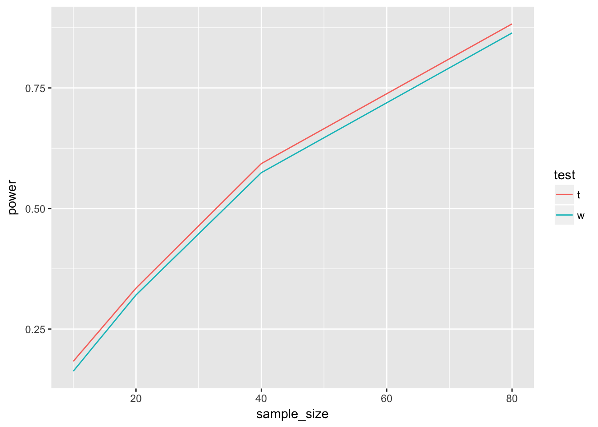
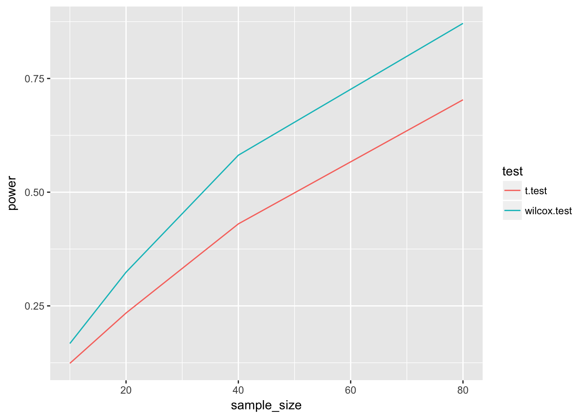

Last updated: 2018-02-14
Code version: 4a4abb1
Setup as asked
## Install and load robustbase
# install.packages('robustbase')
library('robustbase')
## Simulation of 25 samples from normal population
simdat <- rnorm(n = 25, mean = 0, sd = 1)
## Estimate the population sd by the sample sd, MAD and Qn
est1 <- sd(simdat)
est2 <- mad(simdat)
est3 <- Qn(simdat)Do this many times
## Specify the number of simulations
numsim <- 10000
## Create empty lists of size numsim
simdat <- vector(mode = "list", length = numsim)
est1 <- vector(mode = "list", length = numsim)
est2 <- vector(mode = "list", length = numsim)
est3 <- vector(mode = "list", length = numsim)
## Start for() loop
for(i in 1:numsim){
## Simulation of 25 samples from normal population
simdat[[i]] <- rnorm(n = 25, mean = 0, sd = 1)
## Estimate the population sd by the sample sd, MAD and Qn
est1[[i]] <- sd(simdat[[i]])
est2[[i]] <- mad(simdat[[i]])
est3[[i]] <- Qn(simdat[[i]])
## End for() loop
}Transform workflow in to a function
## Start function
simfun1 <- function(
## Function parameters
numsim,
n = 25,
pop.mean = 0,
pop.sd = 1
){
## Create empty lists of size numsim
simdat <- vector(mode = "list", length = numsim)
est1 <- vector(mode = "list", length = numsim)
est2 <- vector(mode = "list", length = numsim)
est3 <- vector(mode = "list", length = numsim)
## Start for() loop
for(i in 1:numsim){
## Simulation of 25 samples from normal population
simdat[[i]] <- rnorm(n = n, mean = pop.mean, sd = pop.sd)
## Estimate the population sd by the sample sd, MAD and Qn
est1[[i]] <- sd(simdat[[i]])
est2[[i]] <- mad(simdat[[i]])
est3[[i]] <- Qn(simdat[[i]])
## End for() loop
}
## Save parameter specifications
pars.spec <- data.frame(numsim, n, pop.mean, pop.sd)
## Return the lists
list(pars.spec = pars.spec, simdat = simdat, est1 = est1, est2 = est2, est3 = est3)
## End function
}To run
## Set random seed and run the function
set.seed(234878)
res1 <- simfun1(numsim = 10000)Transform output lists to vectors
## Transform results from lists to vectors
est1.v <- unlist(res1$est1)
est2.v <- unlist(res1$est2)
est3.v <- unlist(res1$est3)Visualize results
## Kernel-Density plots
plot(density(est1.v), xlim = c(0,2), ylim = c(0,3), main = 'Results simfun1')
lines(density(est2.v), col = 'blue')
lines(density(est3.v), col = 'green')
## Add means
abline(v = mean(est1.v))
abline(v = mean(est2.v), col = 'blue')
abline(v = mean(est3.v), col = 'green')
## Add true value
abline(v = res1$pars.spec$pop.sd, col = 'red')
## Add legend
legend('topright', c('Sample SD', 'MAD', 'Qn', 'True value'),
col = c('black', 'blue', 'green', 'red'), lty = 1)
Both SD and Qn seem to be centered at the true value, sample SD is more peaked so this is the most efficient of the three.
In numbers:
## Bias (= mean(estimates) - the true population value)
mean(est1.v) - res1$pars.spec$pop.sd[1] -0.01315561mean(est2.v) - res1$pars.spec$pop.sd[1] -0.02903609mean(est3.v) - res1$pars.spec$pop.sd[1] -0.000401699## Standard error (= standard deviation of estimates)
sd(est1.v) [1] 0.144101sd(est2.v) [1] 0.2326601sd(est3.v) [1] 0.1769283## Mean squared error (= bias^2 + standard error^2)
(mean(est1.v) - res1$pars.spec$pop.sd)^2 + sd(est1.v)^2[1] 0.02093816(mean(est2.v) - res1$pars.spec$pop.sd)^2 + sd(est2.v)^2[1] 0.05497381(mean(est3.v) - res1$pars.spec$pop.sd)^2 + sd(est3.v)^2[1] 0.03130377Looks like eye-balling was not perfect. Qn is closest to the true value (lowest biast), SD is second. SD has the lowest variance, as we saw. Mean squared error (including bias and variance) is best for SD
Mean squared error (including bias and variance) is best for SD
No, they do not chance much.
## Start function
simfun1_outlier <- function(
## Function parameters
numsim,
n = 25,
pop.mean = 0,
pop.sd = 1
){
## Create empty lists of size numsim
simdat <- vector(mode = "list", length = numsim)
est1 <- vector(mode = "list", length = numsim)
est2 <- vector(mode = "list", length = numsim)
est3 <- vector(mode = "list", length = numsim)
## Start for() loop
for(i in 1:numsim){
## Simulation of 25 samples from normal population
simdat[[i]] <- rnorm(n = n, mean = pop.mean, sd = pop.sd)
## generate an outlier that is 10 times as big as expected
simdat[[i]][1] <- 10*simdat[[i]][1]
## Estimate the population sd by the sample sd, MAD and Qn
est1[[i]] <- sd(simdat[[i]])
est2[[i]] <- mad(simdat[[i]])
est3[[i]] <- Qn(simdat[[i]])
## End for() loop
}
## Save parameter specifications
pars.spec <- data.frame(numsim, n, pop.mean, pop.sd)
## Return the lists
list(pars.spec = pars.spec, simdat = simdat, est1 = est1, est2 = est2, est3 = est3)
## End function
}Run simulations
## Set random seed and run the function
set.seed(23487)
res1 <- simfun1_outlier(numsim = 10000)
## Transform results from lists to vectors
est1.v <- unlist(res1$est1)
est2.v <- unlist(res1$est2)
est3.v <- unlist(res1$est3)Evaluate estimators
## Bias (= mean(estimates) - the true population value)
mean(est1.v) - res1$pars.spec$pop.sd[1] 0.9749472mean(est2.v) - res1$pars.spec$pop.sd[1] 0.01192038mean(est3.v) - res1$pars.spec$pop.sd[1] 0.07743757## Standard error (= standard deviation of estimates)
sd(est1.v) [1] 1.025812sd(est2.v) [1] 0.2396044sd(est3.v) [1] 0.1911491## Mean squared error (= bias^2 + standard error^2)
(mean(est1.v) - res1$pars.spec$pop.sd)^2 + sd(est1.v)^2[1] 2.002813(mean(est2.v) - res1$pars.spec$pop.sd)^2 + sd(est2.v)^2[1] 0.05755238(mean(est3.v) - res1$pars.spec$pop.sd)^2 + sd(est3.v)^2[1] 0.04253454Now both Qn and MAD are clearly preferable to SD.
Qn seems best in terms of bias and variance
The Student’s t-test is used to compare the locations of two samples. One of the assumptions of this test is that the samples come from normal distributions. If this assumption is thought to be violated, the Wilcoxon-Mann-Whitney (WMW) test is often used as an alternative, since this test does not assume a specific distribution. In this simulation exercise, we will assess the performance (in terms of the power) of both tests when used for normal and non-normal data.
Start by writing a function that draws a sample of size n.s1 from a normal population distribution with mean equal to mean.s1 and standard deviation equal to sd.s1. Then, draw a second sample of size n.s2 from a normal population distribution with mean equal to mean.s2 and standard deviation equal to sd.s2. Compare the two samples using t.test(x = s1, y = s2, var.equal = TRUE). Specify that the function repeats these steps numsim times, each time storing the data and the t-test results in a list. Let the function return these lists. If you want, you can use the same general function structure as was used in simfun1().
simfun_2.1 <- function(
n.s1, n.s2, mean.s1, mean.s2, sd.s1, sd.s2,
nsim = 10000
) {
dat <- vector(mode = "list", length = nsim)
t_results <- vector(mode = "list", length = nsim)
for (i in seq(nsim)) {
s1 <- rnorm(n = n.s1, mean = mean.s1, sd = sd.s1)
s2 <- rnorm(n = n.s2, mean = mean.s2, sd = sd.s2)
dat[[i]] <- data.frame(s1, s2)
t_results[[i]] <- t.test(s1, s2, var.equal = T)
}
params <- data.frame(n.s1, n.s2, mean.s1, mean.s2, sd.s1, sd.s2, nsim)
list(parameters = params, simdat = dat, t.test = t_results)
}Specify the function’s parameters as n.s1 = 10, n.s2 = 10, mean.s1 = 0, mean.s2 = 0.5, sd.s1 = 1, sd.s2 = 1 and numsim = 10000. Run the function. From the results (i.e. the list of t-test objects), extract the p-values (see the hint below), and calculate the power of the test (using α=0.05). Note that the power of a test is the probability that the test will reject the null hypothesis when the null hypothesis is false. Here, the null hypothesis is false (since the population means of s1 and s2 differ). The power is then calculated as the proportion of results that were significant.
Hint: One way to extract the p-values from the list of t-test objects is by using the sapply() function: for example, for a list named listname, sapply(1:length(listname), FUN = function(i) listname[[i]]$p.value) will return a vector of p values.
Run simulation
set.seed(12345)
simres <- simfun_2.1(n.s1 = 10, n.s2 = 10, mean.s1 = 0, mean.s2 = 0.5,
sd.s1 = 1, sd.s2 = 1, nsim = 10000)Grab p-values. Note that there is a handy package called broom that helps grabbing important coefficients from a model fit and puts them in a data.frame. Use the map function from purrr to apply broom::tidy to each element of a list. Use map_df to give back a data.frame
require(broom)
require(purrr)
simres_df <- simres$t.test %>%
map_df(tidy)
head(simres_df) estimate1 estimate2 statistic p.value parameter conf.low
1 -0.13294415 0.7859778 -2.4820583 0.02315475 18 -1.696737
2 0.08338741 1.2243200 -2.1344299 0.04681359 18 -2.263954
3 -0.06290978 0.7732625 -1.4158291 0.17389675 18 -2.076952
4 0.02338804 0.9408656 -1.7655418 0.09443027 18 -2.009238
5 0.84250712 0.4741175 0.7989617 0.43472903 18 -0.600315
6 -0.11120045 0.7128092 -1.8482949 0.08105760 18 -1.760646
conf.high method alternative
1 -0.14110645 Two Sample t-test two.sided
2 -0.01791121 Two Sample t-test two.sided
3 0.40460791 Two Sample t-test two.sided
4 0.17428296 Two Sample t-test two.sided
5 1.33709431 Two Sample t-test two.sided
6 0.11262663 Two Sample t-test two.sideddim(simres_df)[1] 10000 9Now see how many times the p-value is below 0.05
table(simres_df$p.value < 0.05)
FALSE TRUE
8150 1850 So the t-test found a significant group difference in 1850 out of 10000 simulations, this means a power of 18.5%
Include the WMW-test (see ?wilcox.test) in your simulation function. Would you perform the two tests on the same data in each run or would you draw new data before each test? Using the function, perform a simulation study investigating the power of both tests for n = 10, 20, 40 and 80 in each group. Use numsim = 10000. Do not adjust the other parameters, and make the simulation replicable. From the output, create a table like the one below. Furthermore, generate a plot of the results, with the sample size on the x-axis and the power on the y-axis. Is numsim sufficiently large?
Yes you would evaluate both tests on each simulated datasets, to reduce variance
Write function
simfun_2.3 <- function(
n.s1, n.s2, mean.s1, mean.s2, sd.s1, sd.s2,
nsim = 10000
) {
dat <- vector(mode = "list", length = nsim)
t_results <- vector(mode = "list", length = nsim)
w_results <- vector(mode = "list", length = nsim)
for (i in seq(nsim)) {
s1 <- rnorm(n = n.s1, mean = mean.s1, sd = sd.s1)
s2 <- rnorm(n = n.s2, mean = mean.s2, sd = sd.s2)
dat[[i]] <- data.frame(s1, s2)
t_results[[i]] <- t.test(s1, s2, var.equal = T)
w_results[[i]] <- wilcox.test(x = s1, y = s2)
}
params <- data.frame(n.s1, n.s2, mean.s1, mean.s2, sd.s1, sd.s2, nsim)
list(parameters = params, simdat = dat, t.test = t_results, w.test = w_results)
}Use function on a range of values
set.seed(123456)
sim_10 <- simfun_2.3(n.s1 = 10, n.s2 = 10, mean.s1 = 0, mean.s2 = 0.5,
sd.s1 = 1, sd.s2 = 1, nsim = 10000)
sim_20 <- simfun_2.3(n.s1 = 20, n.s2 = 20, mean.s1 = 0, mean.s2 = 0.5,
sd.s1 = 1, sd.s2 = 1, nsim = 10000)
sim_40 <- simfun_2.3(n.s1 = 40, n.s2 = 40, mean.s1 = 0, mean.s2 = 0.5,
sd.s1 = 1, sd.s2 = 1, nsim = 10000)
sim_80 <- simfun_2.3(n.s1 = 80, n.s2 = 80, mean.s1 = 0, mean.s2 = 0.5,
sd.s1 = 1, sd.s2 = 1, nsim = 10000)Get p-values
Let’s only grab the p-values now, we can also do this with map.
Use map_dbl to return a double vector (which is computer language for ‘numeric with double precision’, where double stands for the number of digits that are recorded)
df_10_t <- sim_10$t.test %>% map_dbl("p.value")
df_10_w <- sim_10$w.test %>% map_dbl("p.value")
df_20_t <- sim_20$t.test %>% map_dbl("p.value")
df_20_w <- sim_20$w.test %>% map_dbl("p.value")
df_40_t <- sim_40$t.test %>% map_dbl("p.value")
df_40_w <- sim_40$w.test %>% map_dbl("p.value")
df_80_t <- sim_80$t.test %>% map_dbl("p.value")
df_80_w <- sim_80$w.test %>% map_dbl("p.value")Calculate power
df <- data.frame(
test = rep(c("t", "w"), 4),
sample_size = rep(c(10, 20, 40, 80), each = 2),
power = map_dbl(list(df_10_t, df_10_w, df_20_t, df_20_w, df_40_t, df_40_w,
df_80_t, df_80_w), function(x) mean(x < 0.05))
)
df test sample_size power
1 t 10 0.1832
2 w 10 0.1627
3 t 20 0.3348
4 w 20 0.3206
5 t 40 0.5931
6 w 40 0.5743
7 t 80 0.8829
8 w 80 0.8641Put in a table
xtabs(power~sample_size+test, data = df) test
sample_size t w
10 0.1832 0.1627
20 0.3348 0.3206
40 0.5931 0.5743
80 0.8829 0.8641The result for sample size 10 for the t-test is consistent with our previous simulation, so it seems that nsim is large enough
Plot it
require(ggplot2)
df %>%
ggplot(aes(x = sample_size, y = power, col = test)) +
geom_line()
The t-test seems to have a consistently higher power for these normal distributed data.
Perform the same simulations on non-normal data using rlnorm(). Use meanlog = 0 and sdlog = 1 for s1 and meanlog = 0.5 and sdlog = 1 for s2.
This is a generic function for simulating data from any distribution built in to R that takes a location and spread parameter, and returning alongside the data, the results of a t-test and a wilcoxon-mann-whitney test.
This only works because many of the functions r.. where .. is the distribution work with the same argument order (n, mean, sd). (like rnorm and rlnorm)
two_group_location_sim <- function(
n.s1, n.s2, mean.s1, mean.s2, sd.s1, sd.s2,
nsim = 10000,
distribution_function = "rnorm"
) {
dat <- vector(mode = "list", length = nsim)
t_results <- vector(mode = "list", length = nsim)
w_results <- vector(mode = "list", length = nsim)
for (i in seq(nsim)) {
s1 <- do.call(distribution_function, list(n.s1, mean.s1, sd.s1))
s2 <- do.call(distribution_function, list(n.s2, mean.s2, sd.s2))
dat[[i]] <- data.frame(s1, s2)
t_results[[i]] <- t.test(s1, s2, var.equal = T)
w_results[[i]] <- wilcox.test(x = s1, y = s2)
}
params <- data.frame(n.s1, n.s2, mean.s1, mean.s2, sd.s1, sd.s2,
nsim, distribution_function)
list(parameters = params, simdat = dat, t.test = t_results, w.test = w_results)
}Now let’s try to evaluate this function a little more systematically
sample_sizes <- list(10, 20, 40, 80)
set.seed(12345678)
sims <- map(sample_sizes, function(n) {
two_group_location_sim(n.s1 = n, n.s2 = n, mean.s1 = 0, mean.s2 = 0.5,
sd.s1 = 1, sd.s2 = 1, nsim = 10000,
distribution_function = "rlnorm")
})Grab t-tests and w-tests for each sample size setting
This gets a little complicated since we’re mapping on different levels of the list (remember this is now a list of 4 sample sizes, each consisting of 4 lists (“parameters”, “simdat”, “t.test”, “w.test”)), of which the last two are lists of length 10000, containing the test results
pvals_t <- sims %>%
map("t.test") %>%
map(~map_dbl(.x, "p.value"))
pvals_w <- sims %>%
map("w.test") %>%
map(~map_dbl(.x, "p.value"))Calculate powers
df <- data.frame(
test = rep(c("t.test", "wilcox.test"), each = 4),
sample_size = rep(unlist(sample_sizes), 2),
power = c(map_dbl(pvals_t, function(x) mean(x<0.05)),
map_dbl(pvals_w, function(x) mean(x<0.05)))
)Create table
xtabs(power~sample_size+test, data = df) test
sample_size t.test wilcox.test
10 0.1237 0.1673
20 0.2343 0.3240
40 0.4303 0.5813
80 0.7032 0.8712Plot
require(ggplot2)
df %>%
ggplot(aes(x = sample_size, y = power, col = test)) +
geom_line()
Now it looks like the wilcox.test is the clear winner.
Briefly discuss your findings.
So for the log-normal distribution, the wilcoxon-mann-whitney test seems to have better power than the t-test, whereas for normally distributed samples, the t-test has more power.
This will be skipped, since it is the graded quiz question
In cluster randomized trials, randomization is performed on clusters of patients (e.g. hospitals or GP’s), instead of on individual patients. There are multiple possible reasons for choosing such a design, but important ones are (1) logistic efficiency and (2) avoiding treatment group contamination.
Suppose that we aim to perform a randomized trial to study the effect of a certain (dichotomous) intervention X on a continuous outcome Y, and to avoid treatment group contamination we will randomize hospitals, not individual patients. Further suppose that two strategies are considered:
including 10 hospitals, with 10 patients each including 50 hospitals, with 2 patients each Perform a simulation study in which you compare these strategies. More specifically, focus on the bias, the standard error, and the MSE of the estimate of the effect of X. In order to deal with the clustering in the data, fit a random intercept model using lmer() (from the lme4 package). Let the true model equal
\[E(Y_{ij})=2+η_i−3X_{ij}+ϵ_{ij}\]
where \(η_i∼N(mean=0,sd=0.5)\) and \(ϵ_{ij}∼N(mean=0,sd=1)\) for patient \(j\) in hospital \(i\).
Note that, due to the complexity of the model, convergence may not be reached in every simulation run. A convenient function to use in such cases is tryCatch.W.E() from the package simsalapar. This function, which can be ‘wrapped’ around a model specification (e.g. fit1 <- tryCatch.W.E(lm(Y~X))), produces a list with objects value and warning. fit1\(value contains the fitted model, if no error occurred. Warnings or errors, if they occurred, are stored in fit1\)warning. This is convenient in a for loop, since it enables us to retrospectively see where exactly something went wrong (as opposed to only seeing warning messages after running the loop, or errors causing the loop to stop).
Make sure that the data and fitted models are stored, and that the results are replicable. Use system.time() to estimate how many simulations can be performed given the time you have, but make sure you performed enough runs so that replicating the simulations does not affect your conclusions.
Create simulation function
sim_clust_rand <- function(
nhospital = 10,
npatients = 100 / nhospital,
nsim = 10000,
true_intercept = 2,
true_effect = -3,
random_intercept_sd = 0.5,
residual_sd = 1
) {
# grab parameters
params = c(as.list(environment())) # grabs all function parameters
# check validity
if (nhospital %% 2 > 0) stop("please provide an even number of participating hospitals")
# initialize lists
simdat = vector(mode = "list", length = nsim)
fits = vector(mode = "list", length = nsim)
# create progress indicator to preserve sanity
progress_times <- round(seq(from = 1, to = nsim, length.out = 100))
for (i in seq(nsim)) {
if (i %in% progress_times) cat(i, "\r")
hospital = rep(1:nhospital, each = npatients)
x = rep(c(1,0), each = (nhospital / 2) * npatients)
random_intercept = rep(rnorm(n = nhospital, 0, random_intercept_sd),
each = npatients)
y = true_intercept + random_intercept + true_effect * x +
rnorm(nhospital * npatients, 0, residual_sd)
simdat[[i]] <- data.frame(hospital, x, random_intercept, y)
fits[[i]] <- simsalapar::tryCatch.W.E(
lme4::lmer(y~x + (1|hospital))
)
}
list(parameters = as.data.frame(params),
simdat = simdat,
fits = fits)
}Generate 100 simulations to estimate time per simulation
system.time({
sims_1 <- sim_clust_rand(nhospital = 10, nsim = 100)
})1
2
3
4
5
6
7
8
9
10
11
12
13
14
15
16
17
18
19
20
21
22
23
24
25
26
27
28
29
30
31
32
33
34
35
36
37
38
39
40
41
42
43
44
45
46
47
48
49
50
51
52
53
54
55
56
57
58
59
60
61
62
63
64
65
66
67
68
69
70
71
72
73
74
75
76
77
78
79
80
81
82
83
84
85
86
87
88
89
90
91
92
93
94
95
96
97
98
99
100 user system elapsed
3.389 0.035 3.429 So about 1.8 second per 100 simulations. 10000 should take 3 around minutes.
nsim = 10000
nhospital = 10
npatients = 100 / nhospital
true_intercept = 2
true_effect = -3
random_intercept_sd = 0.5
residual_sd = 1
set.seed(345678)
system.time({
sims_1 <- sim_clust_rand(nhospital = 10, nsim = nsim)
sims_2 <- sim_clust_rand(nhospital = 50, nsim = nsim)
})1
102
203
304
405
506
607
708
809
910
1011
1112
1213
1314
1415
1516
1617
1718
1819
1920
2021
2122
2223
2324
2425
2526
2627
2728
2829
2930
3031
3132
3233
3334
3435
3536
3637
3738
3839
3940
4041
4142
4243
4344
4445
4546
4647
4748
4849
4950
5051
5152
5253
5354
5455
5556
5657
5758
5859
5960
6061
6162
6263
6364
6465
6566
6667
6768
6869
6970
7071
7172
7273
7374
7475
7576
7677
7778
7879
7980
8081
8182
8283
8384
8485
8586
8687
8788
8889
8990
9091
9192
9293
9394
9495
9596
9697
9798
9899
10000
1
102
203
304
405
506
607
708
809
910
1011
1112
1213
1314
1415
1516
1617
1718
1819
1920
2021
2122
2223
2324
2425
2526
2627
2728
2829
2930
3031
3132
3233
3334
3435
3536
3637
3738
3839
3940
4041
4142
4243
4344
4445
4546
4647
4748
4849
4950
5051
5152
5253
5354
5455
5556
5657
5758
5859
5960
6061
6162
6263
6364
6465
6566
6667
6768
6869
6970
7071
7172
7273
7374
7475
7576
7677
7778
7879
7980
8081
8182
8283
8384
8485
8586
8687
8788
8889
8990
9091
9192
9293
9394
9495
9596
9697
9798
9899
10000 user system elapsed
390.394 1.400 392.147 (actually it took 6-7 minutes for 10000)
We want to grab the estimate of the effect of \(X\).
Let’s see what the result of a single fit looks like
fit1 <- sims_1$fits[[1]]
fit1$value
Linear mixed model fit by REML ['lmerMod']
Formula: y ~ x + (1 | hospital)
REML criterion at convergence: 299.5013
Random effects:
Groups Name Std.Dev.
hospital (Intercept) 0.665
Residual 1.000
Number of obs: 100, groups: hospital, 10
Fixed Effects:
(Intercept) x
1.764 -2.964
$warning
NULLSince we used the function simsalapar::tryCatch.W.E(), the actual fit is put in an element called value
See if we can get effects easily
coef(sims_1$fits[[1]]$value)$hospital
(Intercept) x
1 0.9180298 -2.964095
2 2.0255223 -2.964095
3 2.6275698 -2.964095
4 1.9457281 -2.964095
5 1.3049497 -2.964095
6 1.6636971 -2.964095
7 2.5211763 -2.964095
8 1.5520048 -2.964095
9 1.1036267 -2.964095
10 1.9812948 -2.964095
attr(,"class")
[1] "coef.mer"No, this gives us the random effects
What if we try broom
broom::tidy(fit1$value) term estimate std.error statistic group
1 (Intercept) 1.7643599 0.3293271 5.357470 fixed
2 x -2.9640955 0.4657388 -6.364287 fixed
3 sd_(Intercept).hospital 0.6650088 NA NA hospital
4 sd_Observation.Residual 1.0002244 NA NA ResidualYes! Someone made sure there is a method for the function lmer for broom::tidy Now all we have to do is create a vectorized way of grabbing the coefficients Since we want to know the effect of x, we will focus on that.
broom::tidy(fit1$value) %>% .[.$term == "x", "estimate"][1] -2.964095or
require(broom)
x_hats_1 <- sims_1$fits %>%
map("value") %>%
map(tidy) %>%
map("estimate") %>%
map_dbl(2)
x_hats_2 <- sims_2$fits %>%
map("value") %>%
map(tidy) %>%
map("estimate") %>%
map_dbl(2)We can create a data.frame to store the estimated effects
require(dplyr)
df <- data.frame(
x_estimate = c(x_hats_1, x_hats_2),
nhospitals = rep(c(10, 50), each = nsim)
)
df %>%
group_by(nhospitals) %>%
# calculate bias, standard error and coverage for both situations
summarize(
bias = mean(x_estimate) - true_effect,
se = sd(x_estimate)
) %>%
ungroup() %>%
# from these, calculate z-score and MSE
mutate(
se_bias = se / sqrt(nsim),
z_score_bias = bias / se_bias,
mse = bias^2 + se^2
)# A tibble: 2 x 6
nhospitals bias se se_bias z_score_bias mse
<dbl> <dbl> <dbl> <dbl> <dbl> <dbl>
1 10.0 0.00141 0.381 0.00381 0.370 0.145
2 50.0 -0.000481 0.242 0.00242 -0.198 0.0587We observe that both methods have low bias. Bias is lowest for 50 hospitals, and the variance too MSE is best for 50 hospitals.
50 hospitals seems preferable
sessionInfo()R version 3.4.3 (2017-11-30)
Platform: x86_64-apple-darwin15.6.0 (64-bit)
Running under: macOS Sierra 10.12.6
Matrix products: default
BLAS: /Library/Frameworks/R.framework/Versions/3.4/Resources/lib/libRblas.0.dylib
LAPACK: /Library/Frameworks/R.framework/Versions/3.4/Resources/lib/libRlapack.dylib
locale:
[1] en_US.UTF-8/en_US.UTF-8/en_US.UTF-8/C/en_US.UTF-8/en_US.UTF-8
attached base packages:
[1] stats graphics grDevices utils datasets methods base
other attached packages:
[1] bindrcpp_0.2 dplyr_0.7.4 ggplot2_2.2.1 purrr_0.2.4
[5] broom_0.4.3 robustbase_0.92-8
loaded via a namespace (and not attached):
[1] Rcpp_0.12.14 nloptr_1.0.4 DEoptimR_1.0-8 compiler_3.4.3
[5] pillar_1.1.0 git2r_0.20.0 plyr_1.8.4 bindr_0.1
[9] tools_3.4.3 lme4_1.1-15 digest_0.6.14 evaluate_0.10.1
[13] tibble_1.4.1 nlme_3.1-131 gtable_0.2.0 lattice_0.20-35
[17] pkgconfig_2.0.1 rlang_0.1.6 Matrix_1.2-12 psych_1.7.8
[21] cli_1.0.0 yaml_2.1.16 parallel_3.4.3 stringr_1.2.0
[25] knitr_1.18 rprojroot_1.2 grid_3.4.3 glue_1.2.0
[29] R6_2.2.2 foreign_0.8-69 rmarkdown_1.8 minqa_1.2.4
[33] tidyr_0.7.2 reshape2_1.4.3 magrittr_1.5 MASS_7.3-47
[37] splines_3.4.3 backports_1.1.2 scales_0.5.0 htmltools_0.3.6
[41] assertthat_0.2.0 mnormt_1.5-5 colorspace_1.3-2 labeling_0.3
[45] utf8_1.1.3 stringi_1.1.6 lazyeval_0.2.1 munsell_0.4.3
[49] crayon_1.3.4 This R Markdown site was created with workflowr